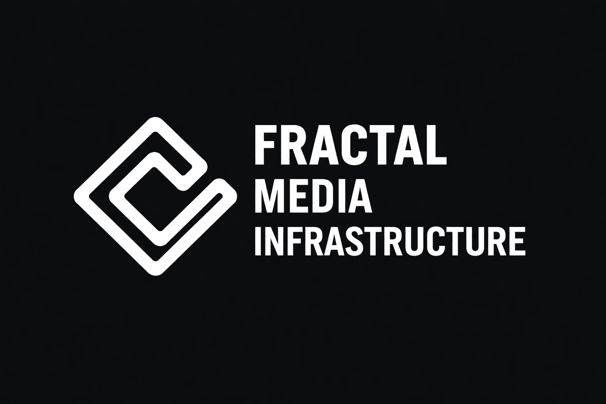

Organization
Fractal Media Infrastructure
The umbrella entity and stewardship layer for the wider body of work, including mission, continuity, licensing stance, and public-interest orientation.
 Fractal Media Infrastructure
Fractal Media Infrastructure

Independent public-good infrastructure
Fractal Media Infrastructure is the umbrella organization behind the instance001 open R&D lab and the Let's Rethink AI media branch. Its work is built for public access, long-term survivability, and practical use without gatekeeping, enclosure, or hype-first incentives.
Why this exists
Fractal Media Infrastructure exists to steward open AI research, local-first software, and accessible explanatory media in forms that remain publicly legible and durable over time. The aim is not to build a closed platform or extractive startup, but to release useful infrastructure into the commons.
This site is the institutional front door for that work. It is intended to provide a clear public home for app stores, grant reviewers, collaborators, researchers, and anyone who needs to understand the organizational structure behind the repositories.
Branches
Organization
The umbrella entity and stewardship layer for the wider body of work, including mission, continuity, licensing stance, and public-interest orientation.
Open R&D lab
The GitHub lab and repository ecosystem covering local-first tools, model-behaviour frameworks, memory architecture, governance critique, and related research artifacts.
Media and outreach
The public education and media branch, translating technical and conceptual work into accessible explanations for wider audiences.
Credibility signals
Repositories are released under AGPLv3 or equivalent open terms to preserve forkability, auditability, and long-term public access.
The organization's work is published openly through the instance001 GitHub ecosystem rather than hidden behind proprietary access.
The default model is public-good infrastructure rather than exclusivity, enclosure, or hype-driven product packaging.
Research, public explanation, and organizational stewardship are separated so external reviewers can quickly understand what sits where.
Current focus areas
Offline-capable, inspectable software for everyday AI use, media generation, local LLM building and training, quantization, and deterministic build support.
Chatty-Cog Chatty-Pet Chatty-Art Nanochat LLM Tweaker Chatty-Factory
Local-first educational software for students, teachers, parents, and self-directed learners who need practical tools without accounts, tracking, or cloud dependence.
Provider-neutral frameworks for better collaboration, session recovery, boundary-aware operation, and behavior shaping without anthropomorphic theater.
Work on reducer-governed state, semantic sorting, model suitability mapping, model-native persistent memory, semantic compression, and compact continuity for local AI systems.
RD Engine LLM Semantic Dataset Sorter Cognition Mesh Test Chamber LLM-Defined Persistent Memory Semantic Signal Alphabet Janet-School
Research examining agency suppression, safety theater, and the institutional tradeoffs inside alignment and governance systems.
Long-cycle conceptual work on cognition, entropy-handling, model behavior, and associated theory scaffolds intended for public scrutiny rather than institutional gatekeeping.
Public links